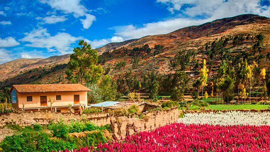

El clima de la Sierra está relacionado con la altitud, y la cercanía a la costa desértica o a la selva húmeda. En general se considera que el clima serrano característico va de templado a frío, con aire muy seco y tiene dos fases estacionales, una lluviosa entre noviembre y marzo, y una seca de abril a octubre. El piso nival de congelación permanente comienza a los 4,800 msnm como promedio, por lo que hay numerosas montañas y cordilleras nevadas. Sin embargo, el calentamiento global está variando estas condiciones, por lo que el hielo por encima de los 5,000 msnm está en retroceso
